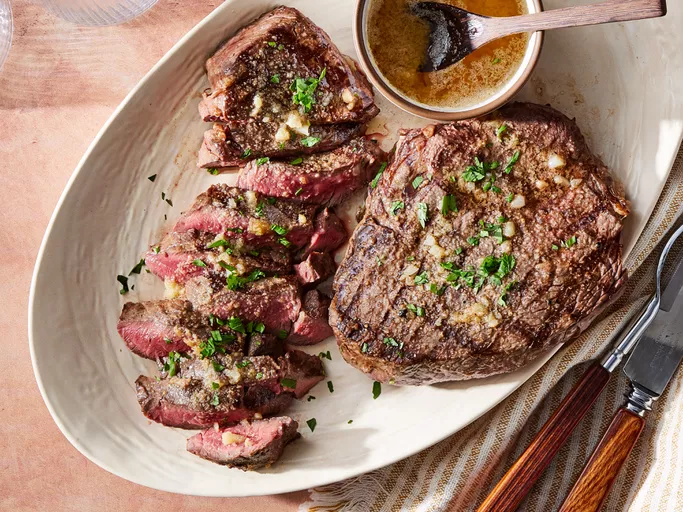

Sirloin Steak

A Sirloin Steak
A delicious Sirloin Steak with a touch of Garlic Butter
Ingredients
- 1/2 cup butter
- 4 cloves garlic, minced
- 2 teaspoons garlic powder
- 4 pounds beef top sirloin steaks
- salt and pepper to taste
Steps
- Preheat an outdoor grill for high heat and lightly oil on the grate
- Melt butter in a small saucepan over memdium-low heat.
- Stir in minced garlic and harlic powder. Set aside
- Season both sides of each steak with salt and pepper
- Place steaks on preheated grill and cook 4 to 5 minutes per side. An instant-read thermometer inserted into the center should read 140 degrees F (60 degrees C) for medium doneness.
- Transfer steaks to warmed plates; brush the tops liberally with garlic butter and allow to rest for 2 to 3 minutes before serving.